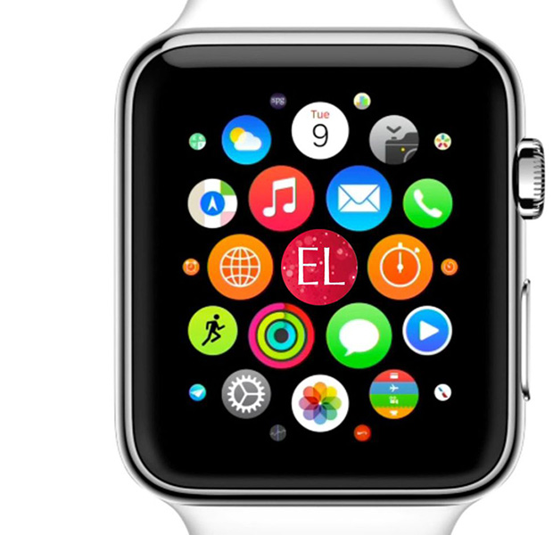
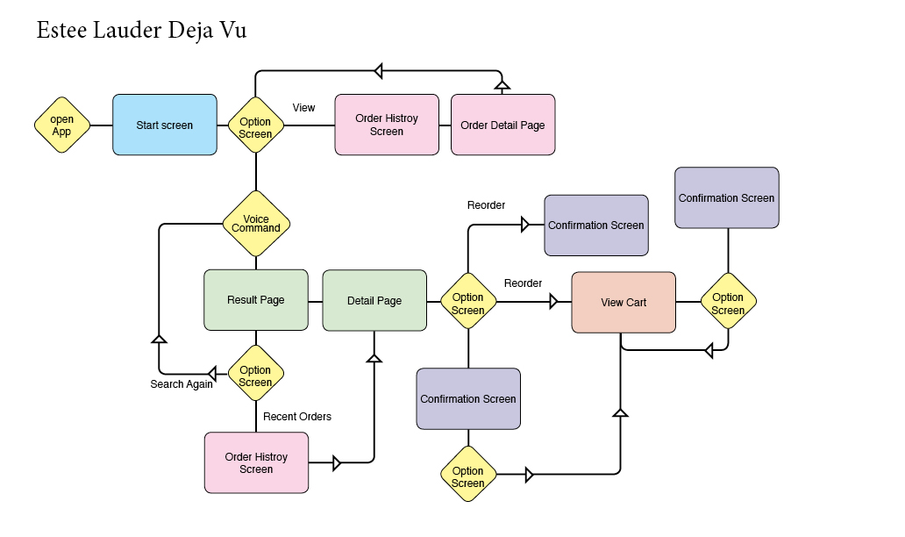
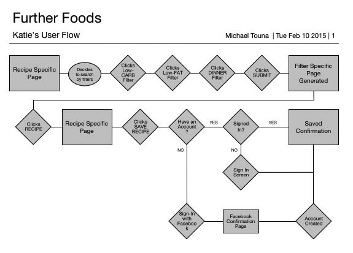
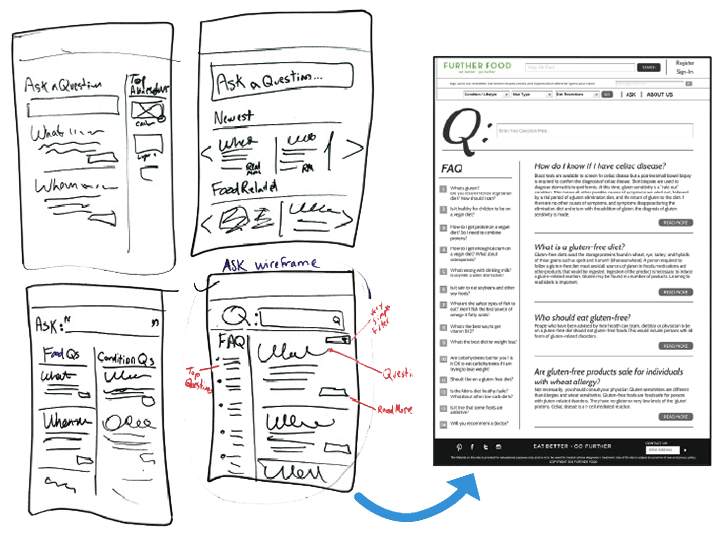
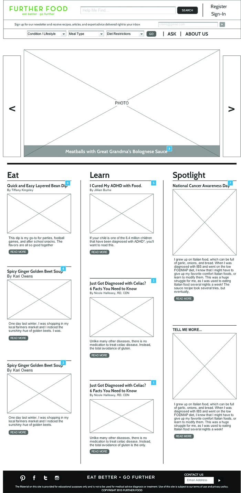
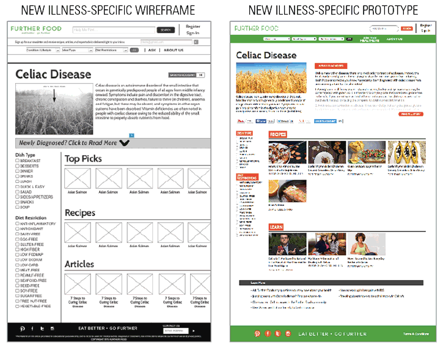

EstÉe Lauder Deju Vu
Apple Watch Reorder App
Concept
It's estimated that about 3.6 millions Apple Watches have been sold (as of Sept 2015). Taking advantage of the iWatch's accessibility as well as understanding it's limitations, we can introduce the Estée Lauder Deja Vu – an Apple Watch app that allows existing customer to reorder makeup quickly at the moment they realize that about to run out.User Story
Samantha closes her work laptop and starts to collect her belongs. It's Thursday and she can't wait to meet her two best friends for drinks uptown. Going outside, she flags down a taxi. Quickly she jumps into the first cab to pull up. She give the driver the address and sits back. Traffic seems have so it make take her 15 minutes to get there. This would be a great time to touch up her makeup. Samantha opens her purse and pulls her compact. She notices that she's almost out of foundation. Lift up her arm, she touches open the Estée Lauder Deju Vu app. She speaks into her iWatch, "Reorder Foundation". The app shows her the last four orders of foundation. She touches the third options. The app gives her the option to Buy Now or Add to Cart. Looking into her purse, she sees her favorite lipstick is low too, so she clicks Add to Cart. "Reorder Lipstick Rogue Nights" she says. The app presents her with one option. She notices that the lipstick is actually called Rogue Evenings. She clicks Buy All Now and the app confirms her order. She sees that she got an email to her phone confirming the order. Samantha feels good knowing she won't run out of her essentials.
User Flow
The app should be limited to just ordering previously purchased makeup. The Apple Watch should not be used as a tool to discover new items. Competitive Analysis
This site was unique in that it targeted a large and growing population with restricted diets. So we tackled the competitive analysis by examining recipe websites, medical sites and social media support groups. They all touched upon a different aspect of Further Food. Surveys & Interviews
Early on, we realized that this wasn’t a site about food or articles. It was a site about hope - the hope to feel better through food. Users bond through their shared conditions and the desire to stop hurting by exchanging knowledge. We also learned that users weren’t using Further Food to simply browse recipes. They were highly focused on what they wanted specifically.
Personas
Using this information, we built several personas representing the different types of users we found.
Information Architecture (IA)
Without a doubt, IA was the biggest challenge of the site. It took a lot of card sorting exercises and team brainstorming to find a new structure that provided what users really wanted from the site. This involved a complete overhaul of the site’s architecture, filtration, and global navigation. It also introduced a totally new section: an illness-specific page. This is a page that contains all the content for a given illness, since most users are only interested in seeing content for their particular condition.
Design Studio
Every section of the site was re-envisioned to create the new overall design. We wanted to reduce the exit rate of the site, so a new, more welcoming look with more engagement on every page was the main focus. We spent more than 11 hours of design studio time redesigning all the sections of the website, which included the existing pages and the new sections.
Wireframing
Building upon our design studio work, we made wireframes and got our first look at the newly proposed website. We took the personas we had created earlier in the process and walked them through several scenarios in our new wireframes. It was a great exercise for exposing gaps in any of the user flows. We reworked our wireframes and were now ready to test.  
User Testing
Test. Iterate. Repeat. It almost sounds like shampoo instructions, and like your favorite shampoo, it worked. As points of user confusion emerged, we would fix them on the spot and then retest with a new group. We tested until we felt confident that our main users were being satisfied to the highest degree.